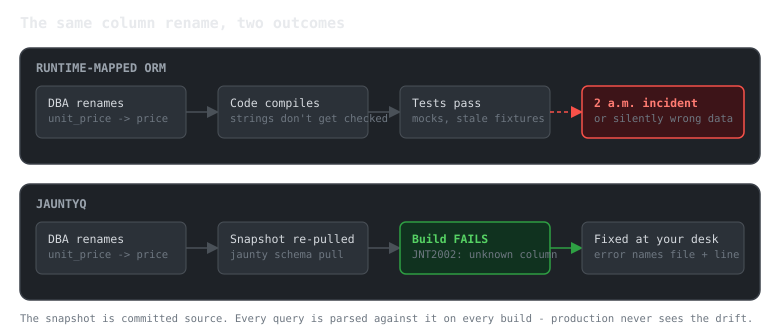

Why JauntyQ (and Why Not)
JauntyQ moves the ORM to compile time. You write real SQL in .sql files; a Roslyn source generator validates every query against a schema snapshot you committed, and emits the fastest C# it knows how to write: typed getters by ordinal, explicit parameter types, no reflection, no runtime SQL parsing. The runtime package is intentionally near-empty - the generated code carries everything.
This page is the honest pitch: the problems JauntyQ solves, the ones it deliberately does not, and how to know quickly if it fits.
The core idea in one diagram
Rename a column, drop a table, shrink a varchar - the build breaks at your desk, with the query file and reason in the error list. Not in staging. Not at 2 a.m.

The problems JauntyQ solves
Schema drift discovered too late. The classic ORM failure: the database changes, the code compiles fine, and the mismatch surfaces as a runtime exception or - worse - silently wrong data. In JauntyQ the schema snapshot is part of your source tree and every query is parsed against it on every build. jauntyq schema verify closes the loop against the live database (exit 0 = match, exit 2 = drift, differences listed); it is a paid verb, and the free tool exits 3 pointing at the install line.
Runtime mapping cost. There is nothing to optimize at runtime because nothing happens at runtime: no reflection, no per-row boxing, no SQL parsing, typed ordinal getters emitted per query. A one-time shape guard validates each result set on first use, then gets out of the way. The generated code is Native AOT and trim compatible by construction.
CRUD boilerplate. From the snapshot alone - zero .sql files - every table gets synthesized GetAll, GetById, Insert (returning the new identity), Update, Delete, Upsert (dialect-native MERGE / ON CONFLICT / ON DUPLICATE KEY), BulkInsert, and GetBy<ForeignKey> loaders, in sync and async forms, with POCO overloads. Write .sql only for the queries that are actually yours; a user file with the same entity and method name overrides the synthetic.
Bad SQL that "works". The build also reviews your queries: cartesian joins (JNT8001), non-sargable predicates like functions on filtered columns (JNT8002), leading-wildcard LIKE (JNT8003), filters and joins on unindexed columns (JNT8004), duplicate queries (JNT8005), joins that match no declared foreign key (JNT8006), ORDER BY on an unindexed column (JNT8007), N+1 access patterns (JNT8008), and pages taken without a deterministic row order (JNT8009/JNT8010, a LIMIT/OFFSET whose ORDER BY is not tiebroken on something unique, so rows silently repeat or vanish between pages) surface as build warnings, using the index metadata and foreign-key graph in your snapshot.
Values the database will reject or truncate. String longer than the column's nvarchar(40)? Decimal that cannot fit decimal(19,4)? Those are build errors (JNT5001/JNT5002) and guarded client-side with exact messages, not a SqlException after the round trip.
Migrations as a blind spot. Put pending DDL in db/migrations/*.sql and the generator simulates it onto the snapshot before validating - so a query against a column your next migration drops is a build error today, while the migration is still in review.
Lost updates. SQL Server rowversion columns are understood natively: excluded from inserts, appended to UPDATE/DELETE predicates, zero rows affected = conflict. Optimistic concurrency without a tracking layer.
What JauntyQ deliberately does not do
- It does not hide SQL. There is no LINQ provider and no query builder. If writing SQL is a problem for your team, JauntyQ is not your tool - EF Core is over there.
- No runtime query composition. Queries are known at compile time, period. Dynamic search screens that assemble SQL from user input need a different tool (its sibling Jaunty handles runtime shapes).
- No change tracking, no identity map, no lazy loading. Row POCOs are plain data.
SELECT *is a build error (JNT3002), with a paste-ready explicit column list in the message. Star projections are how shape drift sneaks in; JauntyQ closes that door on purpose.- It demands snapshot discipline. The schema snapshot is committed and re-pulled when the database changes. If your team cannot keep that habit, the build errors will feel like friction rather than protection.
- .NET SDK 8.0+ to build. The generator runs inside Roslyn 4.12 (SDK
8.0.400+/VS 17.12+); your consuming project's own TargetFramework isn't
restricted to net8.0 -
Extrode.JauntyQ.Runtimealso ships a netstandard2.0 target. - One honest boxing caveat. Parameter values box once per call at the ADO.NET boundary (
DbParameter.Valueisobject) - every data library pays this; on PostgreSQL JauntyQ avoids even that with typedNpgsqlParameter<T>. The read path allocates nothing per row beyond your POCO. - Not open source. JauntyQ is source-available, not OSI-approved: the free core is licensed under the ISL-R (source viewable, use permitted) with a Generated Output Exception covering the code it emits into your project, and the paid team-safety tooling ships under the ISL-EULA. See pricing. Hard OSS requirement? Use Dapper or EF Core.
JauntyQ or Jaunty?
Same philosophy - SQL is yours, mapping is strict, reflection is not welcome - different binding time.
| You have | Pick |
|---|---|
| Queries known at build time, team willing to commit a schema snapshot | JauntyQ |
| Dynamic SQL, runtime result shapes, gradual migration from Dapper | Jaunty |
| A greenfield service that wants maximum build-time safety | JauntyQ |
| The desire for the framework to write SQL and track changes | EF Core, honestly |
Next steps
- Overview - what is in these docs.
- Learn by doing - guided tutorial and coding exercises against SQLite, no server required.
- The repository
README.md- full quickstart, directives reference, and write semantics.